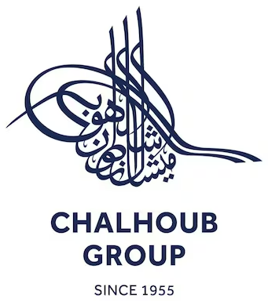
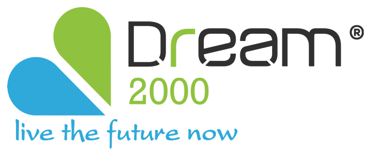
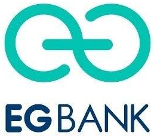

ERP delivery, from the first workshop to life after go-live.
We implement ERPNext and build the custom software around it — finance, inventory, sales, HR and payroll, and the integrations that connect them. The consultant who runs your workshop is the one who configures your system.
What we deliver
ERPNext at the core, and custom software around it — only where it earns its cost.
ERPNext implementation
Process workshops, configuration, data migration, testing, training and go-live — against a written scope.
Custom web apps
Portals, internal tools and dashboards on Frappe, built beside your ERP rather than against it.
Mobile apps
Field, warehouse, attendance and approval apps on the same live data as head office.
Integrations
APIs and file exchange between your ERP, HR, POS, e-commerce, banks and tax e-invoicing portals.
- Finance & accounting
- Procurement & inventory
- Sales & point of sale
- HR & payroll
- Frappe Education
Standard first, custom only where the business needs it.
NO HAND-OFF BETWEEN SELLER AND BUILDERDiscover
Process workshops and requirements traceability. Every gap is written down before a setting is touched.
Configure
Standard setup, with gaps closed by rules and extensions.
Migrate
Master data and opening balances loaded and reconciled, so your balances are right on day one.
Test & train
Integration and user acceptance testing, and key-user training.
Go-live
Cutover, then hypercare until operations settle.
- Incident support
- Configuration changes
- New reports and workflows
- Integration monitoring
- ERP optimisation
Qcore is a young firm; its experience is not.
Work delivered by our consultants.-
Multi-brand retail
EgyptLed procurement, supply chain and inventory on a large cloud ERP rollout, with migration templates so stock is accurate on day one.
-
Pharmaceuticals
EgyptInventory and warehousing for a regulated environment, plus the end-to-end sales cycle and finance — through hypercare.
-
Oil & gas
KSAProcurement and supply chain tuned to regional requirements, and finance built around KSA regulatory localisation.
-
Banking
EgyptCore HR and payroll on a secure, compliant platform, with real-time workforce dashboards for executives.
-
Multi-country retail
GCCEight interfaces between a data platform, a planning system and two ERPs. Deduplication cut delivered rows by over 35%.
-
Retail
KSAOvertime payments and a loans & advances system built from scratch, plus automated position management.



Straight answers, before the call
Is ERPNext the right system for us?
Often, not always. On the first call we’ll tell you whether it fits — including when it doesn’t.
What if ERPNext doesn’t cover something we need?
We use the standard first. Where a real gap remains, we build it as a proper app on top rather than changing core, so upgrades keep working.
Your team’s background is SAP. Why ERPNext?
The method is the same: requirements, configuration, migration, testing and go-live. ERPNext gives growing businesses that discipline without enterprise licence costs.
Who will we actually work with?
The consultants named on this page. The person who runs your workshop configures your system and stays through go-live.
Let’s review your process together.
For growing businesses that need structured finance, inventory, procurement, sales or HR — without the overhead of a large implementation firm.